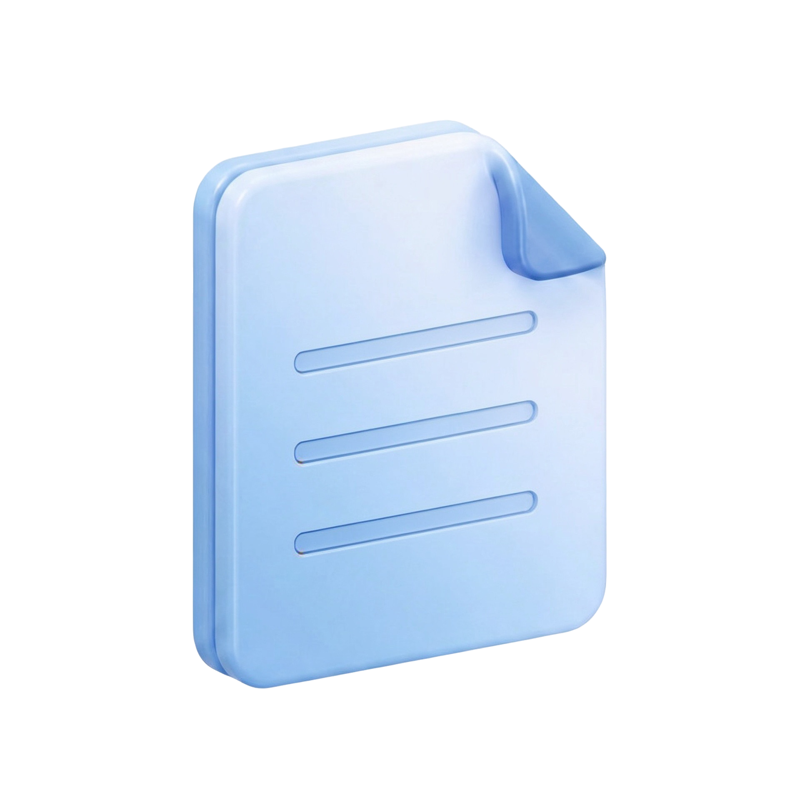
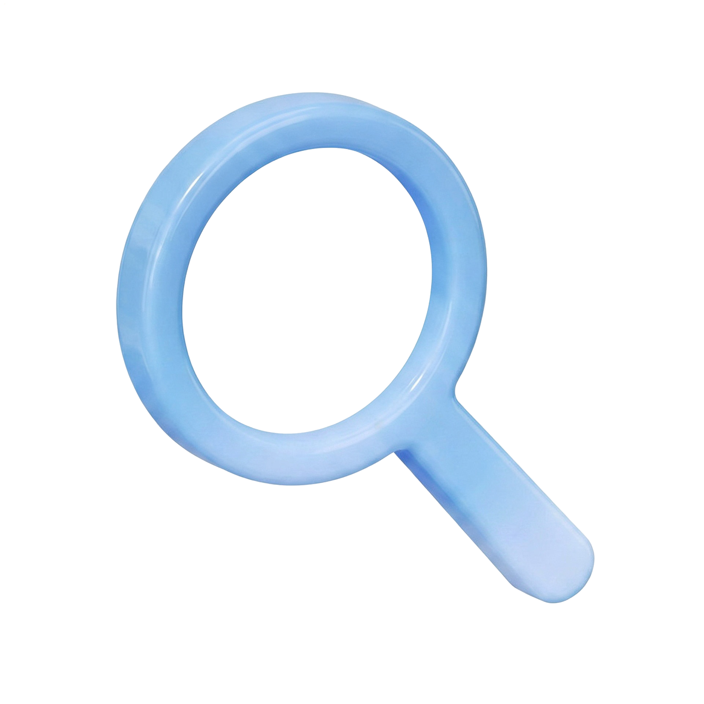

제약사·CRO 모니터링 팀을 위한
임상연구 모니터링 플랫폼
임상연구 모니터링 플랫폼
현장의 요구를 바탕으로, 그 불편함을 자동화로
풀기 위해 직접 설계하고 현장 경험으로 다듬었습니다.
정해진 틀에 연구를 맞추지 않습니다.
연구에 맞게 플랫폼을 구성합니다.
연구정보 확인 후 환경을 구성하고
EDC 연동·모니터링을 설정합니다.
임상연구 현장 경험을 바탕으로
설계하고 구성했습니다.
매일 정해진 시점에 동기화하여 데이터를
검토·모니터링합니다. 등록 현황·유효성·안전성 현황을 매일 시각화합니다.
데이터 오류와 이상 패턴을 매일 자동 점검하고,
기관별로 점수화하여 자료 정합성과 기관 관리
상태를 한눈에 파악합니다.
자연어로 질문하면 차트·요약으로 즉답합니다.
데이터 조회·해석 및 인사이트 도출에 도움을 줍니다.
| 구분 | 인원 |
|---|---|
| 이상사례 발생 대상자 전체 | 162명 |
| 이 중 60세 이상 | 83명 |
| 비율 | 약 51% |
임상 판단·인과성 평가에는 별도 검토가 필요합니다.
기관별 정기 보고서·뉴스레터를 자동 생성·발송하여,
등록 독려에 활용하고 의뢰사 로고로 브랜딩합니다.

데이터 수기 취합 · 사후 집계의 반복 업무를 제거하고,
데이터가 쌓이는 순간 의사결정에 쓸 수 있는
인사이트로 전환합니다.
분산된 데이터를 하나의 화면에서
한눈에 파악합니다.
핵심 지표를 한눈에 파악해
즉각 대응할 수 있습니다.
이상 신호를 빠르게 가시화하여
선제적으로 대응합니다.
정기 뉴스레터 자동 발행으로
반복 업무를 제거합니다.

문의 접수 → 연구 환경 확인 → EDC 연동·환경 구성 → 담당자 온보딩 순서로 진행됩니다. 도입 기간은 연구 환경에 따라 다르며, 문의 주시면 일정을 맞춰 안내드립니다.
Trial Insight는 임상 데이터를 직접 저장하지 않습니다. EDC 시스템과의 연동은 읽기 전용으로 이루어지며, 전송 구간은 암호화됩니다. 세부 보안 요건은 문의 시 별도 안내드립니다.
국내에서 주로 사용되는 EDC 시스템과의 연동을 지원합니다. 현재 사용 중인 EDC 환경을 알려주시면 연동 가능 여부를 확인해드립니다.
Trial Insight는 임상연구 모니터링 보조 도구로, 규제 제출용 문서 생성 기능은 제공하지 않습니다. 임상 판단·인과성 평가에는 별도 검토가 필요하며, 관련 규제 요건은 사용 기관이 직접 확인하셔야 합니다.
제품 정보 문의하기
063-278-9637
info@nanumspace.com
제품 데모는 준비 중입니다. 문의 주시면
공개 일정에 맞춰 안내드리겠습니다.